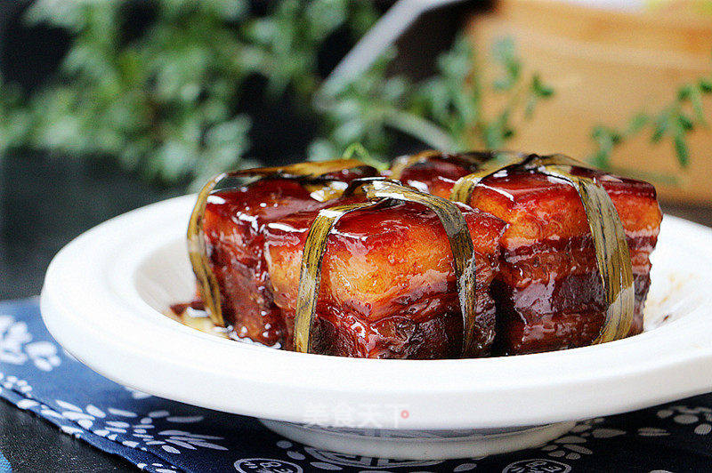

红烧肉(Braised Pork)

一碗直达灵魂的红烧肉，肥而不腻，入口即化，一定要学会做给家人吃啊！
食材
- 五花肉 500克
- 冰糖 50克
- 花雕酒 1碗
- 生抽 50克
- 老抽 20克
- 八角 2粒
- 桂皮 1小段
- 红曲米 10克
- 香葱 1把
- 葱 适量
- 姜 适量
步骤
- 准备好各种食材。
- 五花肉洗净改刀切成五六厘米见方的大块，用棉绳或者粽叶将五花肉的肉皮朝上，捆绑起来，末端处打一个活节。
把五花肉绑一下是为了防止五花肉在长时间的炖煮过程中肥肉和瘦肉散开。。
- 绑好的五花肉冷水下锅，煮出杂质，撇去浮沫。
- 焯过水的五花肉捞出，用温水洗去附在五花肉上的渣滓。
- 砂锅底部铺上一层小葱段和姜片，放些香葱和姜片垫底是为了防止长时间的炖煮肉皮粘锅。
- 将五花肉块皮朝下，码在砂锅里，加入生抽、老抽。
- 加入冰糖、料包和一碗花雕酒与食材持平。
- 花雕酒不够的话加入适量热水与五花肉持平。
- 大火烧沸后转小火焖60分钟左右。
- 打开盖子给五花肉翻个面，盖上盖子继续小火焖约1个小时。
- 直到筷子可以轻松插入肉中，拣去葱姜等调料，开大火收汁，关火，完成。
直到筷子可以轻松插入肉中，肉块酥软，开大火收汁，把汤汁收浓即可关火盛出。